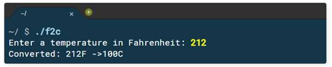

C++ Syntax Basics
The hello program, which you saw earlier, doesn’t include many features you’d expect in a "real" program. To illustrate more of C++, let's consider the program named f2c which converts Fahrenheit temperatures to Celsius.
This is an IPO or Input Processing Output program, typical of those that we'll be building in these first few weeks. A computer is an information processor; a Cuisinart for words, numbers and ideas. Instead of vegetables, you feed it input; raw numbers, facts, figures and symbols (data). Your computer program processes that data, and turns it into information: organized, meaningful and useful output.
Every program is based on this fundamental concept: input data, process it and then produce (or output) some information.The IPO Pattern
The programs we'll be writing are console-mode, IPO programs. These are plain-text programs, which run inside your terminal, and follow this pattern:
- prompt the user to enter some input
- read the user's input, storing it in variables
- process the input
- output the results
Here's an example:

- The f2c program asks the user for a temperature in Fahrenheit. This is the prompt. Note that the prompt appears on the same line as the input and ends in a space, so that the input is nicely separated.
- The program stops and waits for the user to enter in some input and press ENTER. In this case, the user entered 212 for the temperature in Fahrenheit. The program reads the user input and stores it in a variable.
- Next, the program uses an algorithm to convert the Fahrenheit temperature into Celcius.
- Finally, it diplays the result on the console.
The screenshot above is called a sample run. It shows the input and output in the terminal or shell. Now, let's take a closer look at the f2c program itself.
 This course content is offered under a
CC
Attribution Non-Commercial license. Content in this course
can be considered under this license unless otherwise noted.
This course content is offered under a
CC
Attribution Non-Commercial license. Content in this course
can be considered under this license unless otherwise noted.